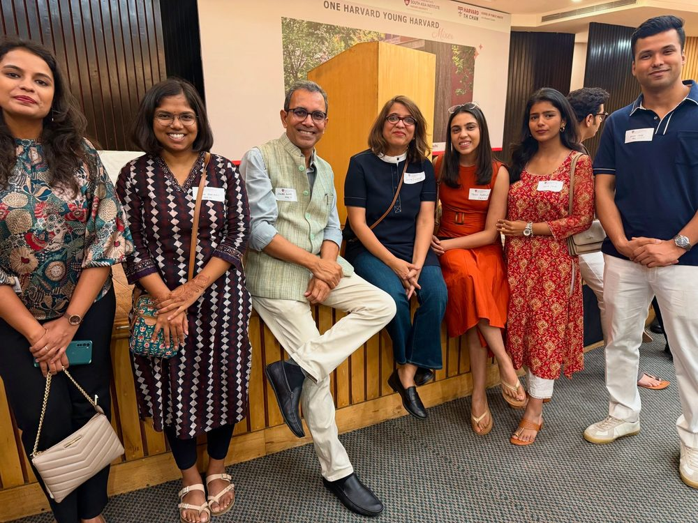
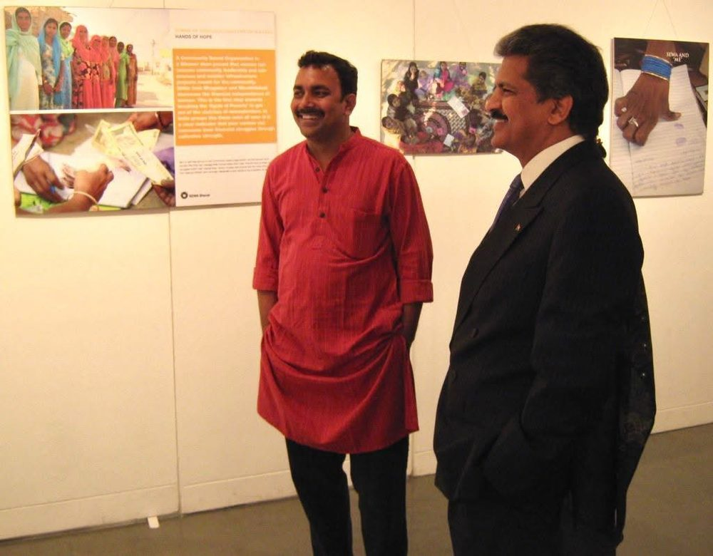
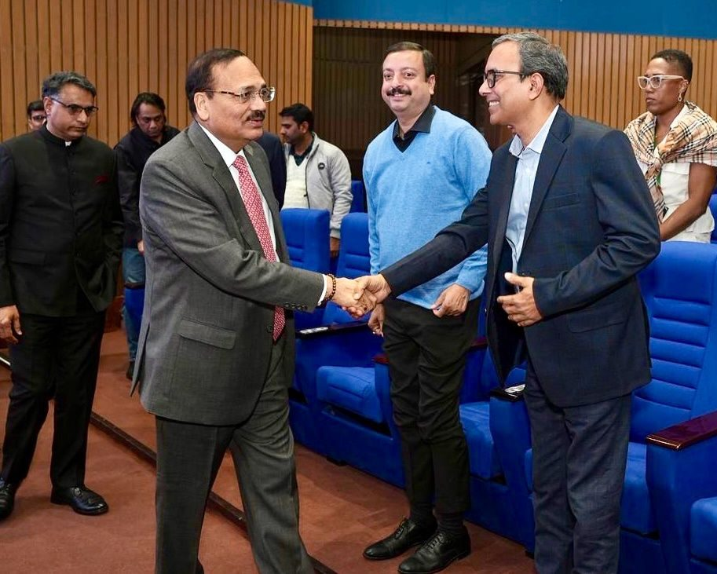

The book
Katihar to Kennedy: The Road Less Travelled
The road in the letter, written down in full. Published by Vani Book Company, New Delhi, in 2019, and held by the Harvard Kennedy School Library in its Community Voices collection.
Founder, Blue Ocean Education
6, School Lane
Connaught Place, New Delhi
Dear student,
I grew up in Katihar, a small town in northeast Bihar. Nobody I knew had studied outside India. The word Harvard was not part of anyone's plans.
What I had was a family that treated education as serious work, and teachers who expected more from me than our circumstances did.
That carried me a long way. I earned my bachelor's and master's degrees in political science at Delhi University, and my MPhil and PhD at Jawaharlal Nehru University. I studied social security for the poor at the Institute of Social Studies in The Hague. In 2014, Harvard's Kennedy School of Government took me in as a mid-career student, on a full scholarship. I sat in class with diplomats, military officers, and ministers from around the world, and I held my own. The boy from Katihar belonged in that room.
Harvard changed what I believed a student from anywhere could do. After graduating, I ran Harvard's work in India as Country Director of the Lakshmi Mittal and Family South Asia Institute. I served as President of the Harvard Club of India. I wrote a book about the whole road, Katihar to Kennedy, so students in towns like mine could see it drawn on a map.
Then, at the height of that work, I chose to spend my days across the table from teenagers again. People ask me why.
When I returned to India, parents kept asking me one question. How does a child from here get into a place like that? I looked closely at the industry that had grown around that question, and it troubled me. The college list came first, and the student was sanded down to fit it. Certificates were collected by the dozen. Essays arrived in a rented voice. The student was processed, and admissions officers could tell.
Blue Ocean starts from the other end. Who is this student becoming? What would make them more capable and more interesting by the time they apply? The strong application is a by-product of that work. It is never the goal itself. Inside the company we keep the idea to six words. Develop the student. Admissions follow.
Those six words are the whole company. Admissions officers read thousands of files every cycle. They know a template when they see one, and they know depth when they see it. Depth cannot be faked in an essay. It has to be built, over years, in the student. This is slower work. It means real projects instead of certificate collecting, original research instead of padded activity lists, and writing that sounds like the student because the student did the thinking.
So I work directly with every student we take on, in weekly sessions and monthly strategy meetings. We cap the cohort each year because past a certain number, that promise breaks. My name is on every student's plan, and I answer for it.
We make one promise at Blue Ocean. Serious work, done properly, with me in the room. The results on our results page came from that promise, and from students who did the work. I would be glad to meet your family over a diagnostic call.
In print, and on camera
Op-eds in the national dailies, coverage of the appointments the letter names, and the talks, all under someone else's byline.
Written by Dr. Sanjay
Written about him
The book
The road in the letter, written down in full. Published by Vani Book Company, New Delhi, in 2019, and held by the Harvard Kennedy School Library in its Community Voices collection.
The record
Thirty years, from a small town in Bihar to Harvard and back to a table full of teenagers.



Milestones
Work with us
We take on a small number of students each year. If you'd like to find out whether we're the right fit, reach out and we'll set up a conversation.